Guideคู่มือ
Pictures from the game, numbers from the game's own config. Updated with every patch.ภาพจากในเกม ตัวเลขจากค่าในเกมจริง อัปเดตทุกแพตช์
🌱 Start Here
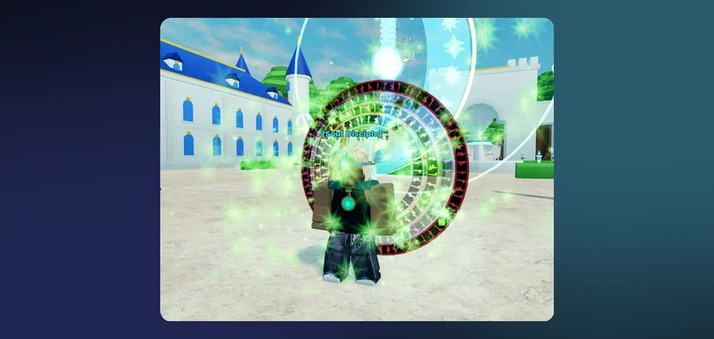
Hunt glowing Resonant beasts ◆ and absorb their power as Rings 💍
1️⃣ Pick a side → awaken your Soul (your weapon)
2️⃣ Follow the Headmaster ❓ → training glade
3️⃣ Absorb your first Ring 💍 → head out to the Outskirts
🗺️ Touch every Waygate — warp between them for free
🔓 Rings unlock levels: 0 → Lv10 · 1 → Lv20 · 2 → Lv30 · 3 → Lv40 · 4 → Lv50
🌿 Stuck at Lv49? Eat an Immortal Herb → Breakthrough (Heart Cavern, on the rock mound in the middle)
⚔️ Proving Grounds in the Outskirts: the place to duel
🛡️ No PvP until Lv15 + your first Ring
⚔️ absorbing always turns PvP on
📅 Log in each day → Lumen 🪙 or Echo 💎
Day 7 → free Resonance Ward
🎮 Controls
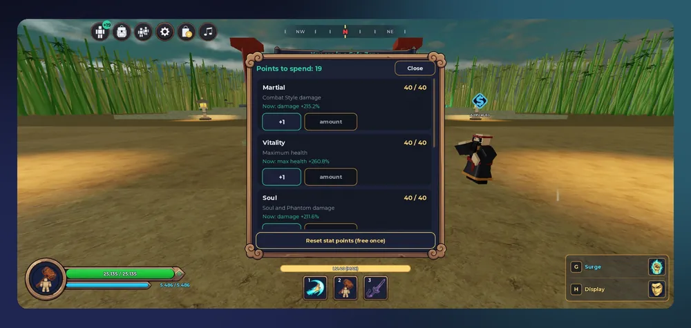
🖱️ M1 attack
Z X C V skills (V = ultimate, 4th Ring)
Q dash 💨 (out of red warnings)
Left Ctrl walk ↔ run 🏃 (a dash starts a run)
Space ×2 double jump
1 2 3 fists / Soul / hidden weapon
G Surge 🔥 (in a fight)
H Display 💍 (show your Rings)
📱 Phone: every action has a button, a dash starts a run
🎮 Console: R2 attack, B dash, L1 Surge, L3 run
📊 Stats
⚔️ Martial fists
❤️ Vitality max HP
✨ Soul Soul skills
🔋 Spirit Energy, regen, heals
🗡️ Artifice hidden weapons
Max 50 a stat → you can max 3
Rings 💍 and Relics add more on top
🔄 Reset: first time free
💍 How Rings Work
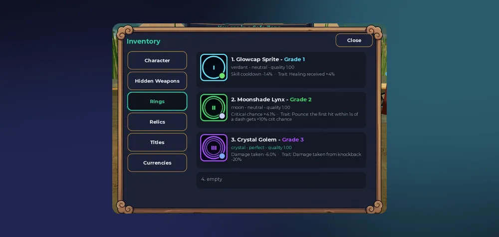
◆ Resonant beasts (8%) and every boss drop a Remnant — absorb it ⏳ I 15s · II 30s · III 45s · IV 60s
Each Ring = stat points + a perk + a trait + a skill (Z → X → C → V)
🎯 Match your Soul:
perfect = full
neutral = half trait
clash = no trait ✖
Obelisk Maul 🪨💎
Twilight Thorn Lotus 🌿🌙
Thunderfang Kirin ⚡🌪️
Crescent Moon Chakram 🌙💎
🔒 Grade: Ring 1–2 → ≤ II
Ring 3 → ≤ III
Ring 4 → ≤ IV
✨ Polish (Librarian) rerolls Quality 0.90–1.10
💥 Break Rings 1,000 Lumen each → collect a new set
📜 Every Ring
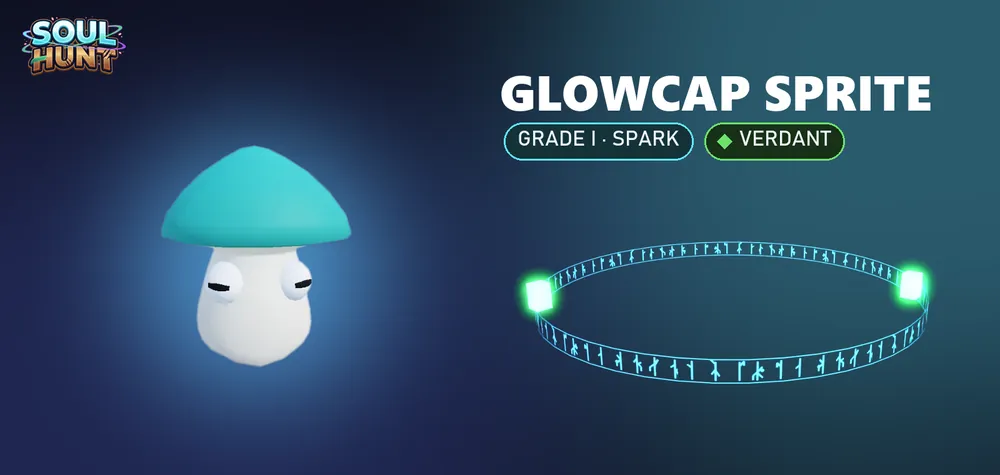
Traits work in full on a perfect Soul
✖ on clash
Glowcap Sprite · Grade I · 🌿 Verdant
✨ Trait: Healing received +4%
➕ Perk: Skill cooldown −1.6%
💪 Spirit
✅ Twilight Thorn Lotus
📍 Academy glade Lv5–7 · Outskirts Lv11–15
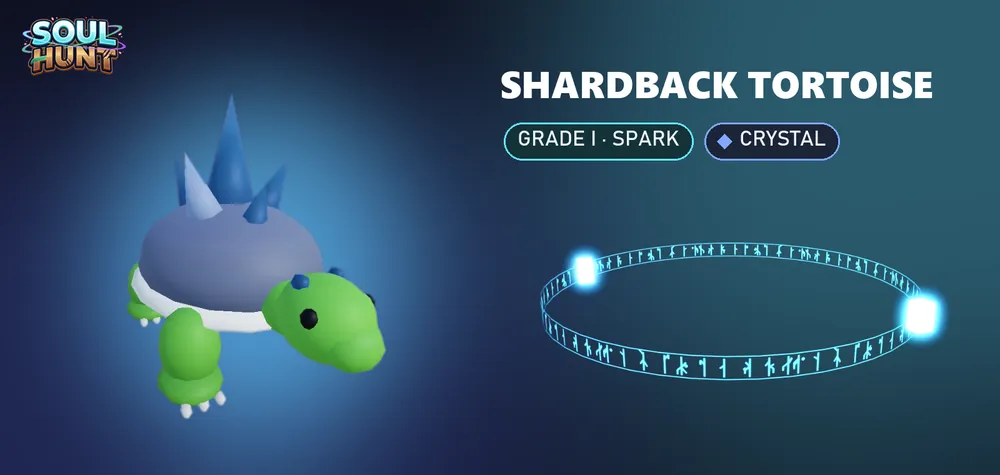
Shardback Tortoise · Grade I · 💎 Crystal
✨ Trait: Max Health +3%
➕ Perk: Damage taken −2%
💪 Vitality
✅ Obelisk Maul
Crescent Moon Chakram
📍 Academy glade Lv5–7 · Outskirts Lv10–14
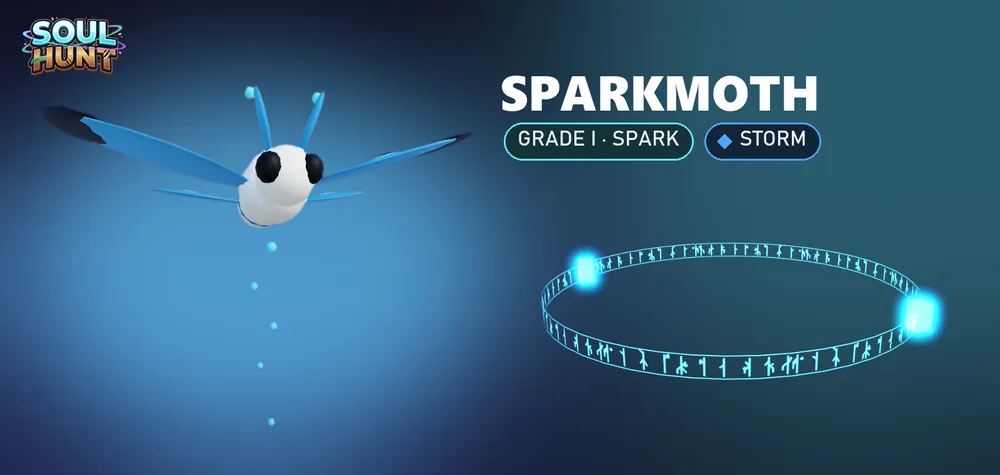
Sparkmoth · Grade I · ⚡ Storm
✨ Trait: M1 damage +3%
➕ Perk: Critical chance +2.4%
💪 Martial
✅ Thunderfang Kirin
📍 Academy glade Lv5–7 · Outskirts Lv14–18
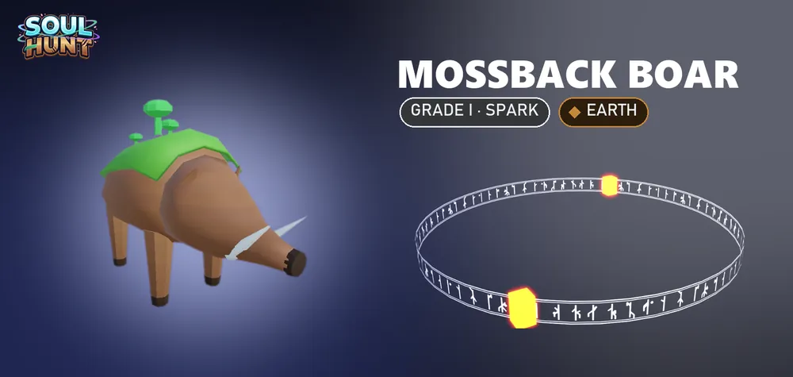
Mossback Boar · Grade I · 🪨 Earth
✨ Trait: Damage taken while using a skill -3%
➕ Perk: Damage taken −2%
💪 Vitality
✅ Obelisk Maul
📍 Outskirts · Lv10–14
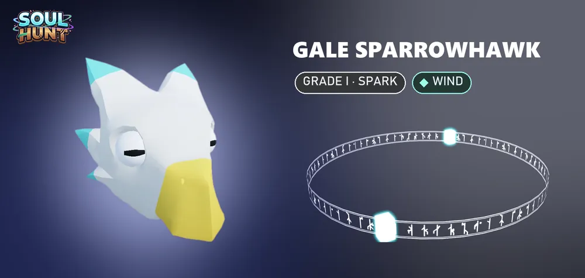
Gale Sparrowhawk · Grade I · 🌪️ Wind
✨ Trait: Dash cooldown -10%
➕ Perk: Move speed +2%
💪 Artifice
✅ Thunderfang Kirin
📍 Outskirts · Lv16–22
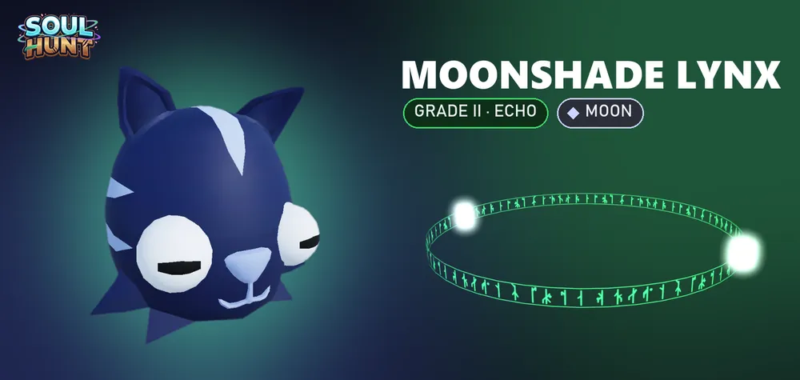
Moonshade Lynx · Grade II · 🌙 Moon
✨ Trait: Pounce: the first hit within 1s of a dash gets +10% crit chance
➕ Perk: Critical chance +4.8%
💪 Martial
✅ Twilight Thorn Lotus
Crescent Moon Chakram
📍 Deepwood · Lv22–27
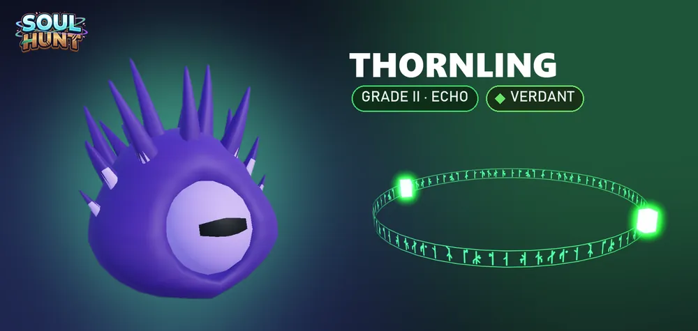
Thornling · Grade II · 🌿 Verdant
✨ Trait: Thorn Lash roots +0.2s longer
➕ Perk: Skill cooldown −3.2%
💪 Soul
✅ Twilight Thorn Lotus
📍 Deepwood · Lv24–29
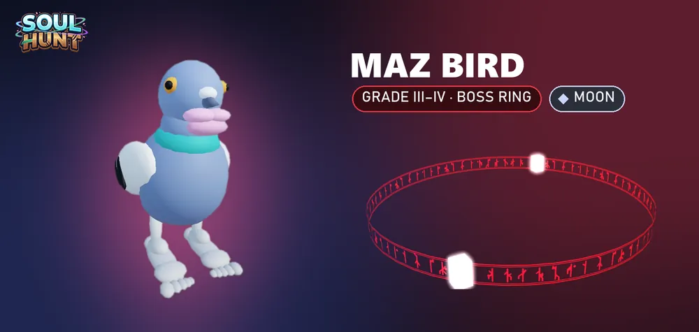
Maz Bird · Grade III–IV · 🌙 Moon · 👑
✨ Trait: Energy regeneration +10%
➕ Perk: Skill cooldown −7.2%
💪 Soul
✅ Twilight Thorn Lotus
Crescent Moon Chakram
📍 Lotus pond, Outskirts
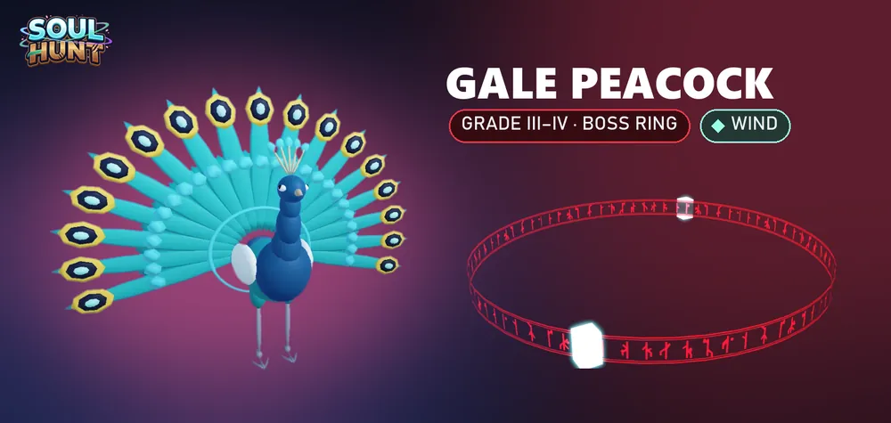
Gale Peacock · Grade III–IV · 🌪️ Wind · 👑
✨ Trait: Surge lasts +1s
➕ Perk: Move speed +9%
💪 Soul
✅ Thunderfang Kirin
📍 Outskirts, edge of Deepwood
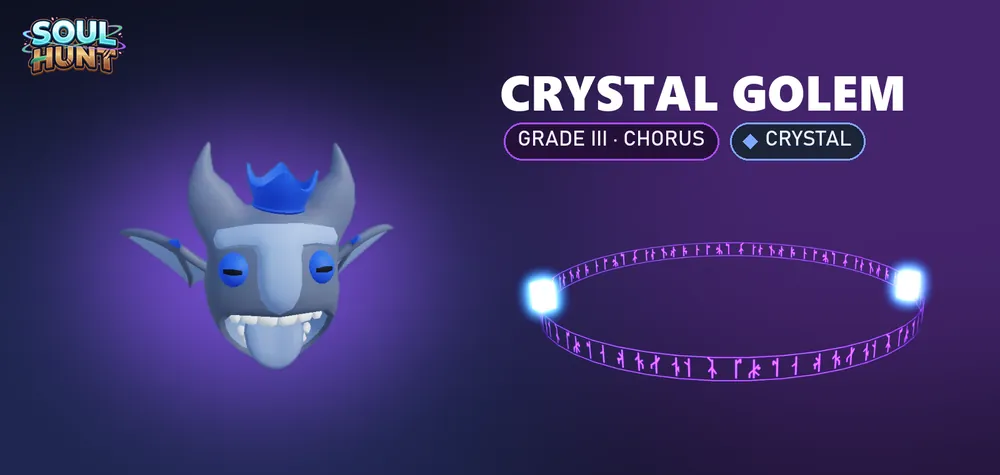
Crystal Golem · Grade III · 💎 Crystal
✨ Trait: Damage taken from knockback -20%
➕ Perk: Damage taken −6%
💪 Vitality
✅ Obelisk Maul
Crescent Moon Chakram
📍 Deepwood Hollow · Lv30–35
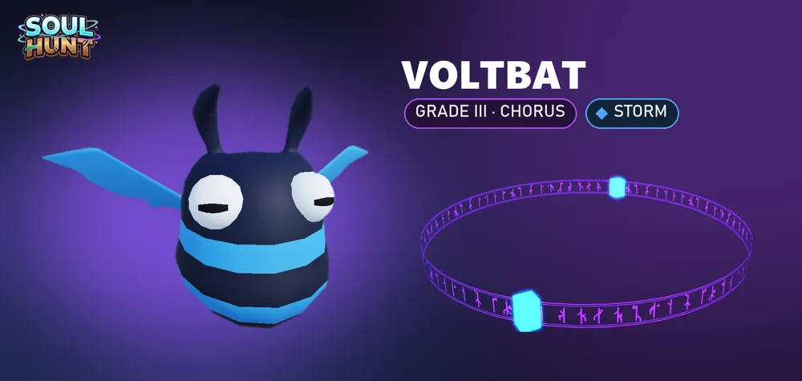
Voltbat · Grade III · ⚡ Storm
✨ Trait: Chain Lightning bounces once more
➕ Perk: Move speed +6%
💪 Artifice
✅ Thunderfang Kirin
📍 Deepwood Hollow · Lv34–40
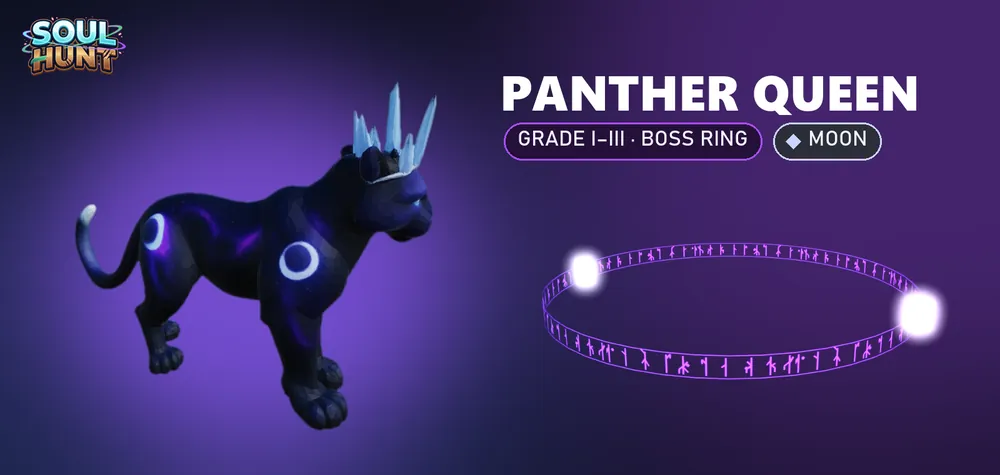
Moonshade Panther Queen · Grade III–IV · 🌙 Moon · 👑
✨ Trait: Move speed +8% for 3s after a kill
➕ Perk: Move speed +9%
💪 Martial
✅ Twilight Thorn Lotus
Crescent Moon Chakram
📍 Deepwood Hollow
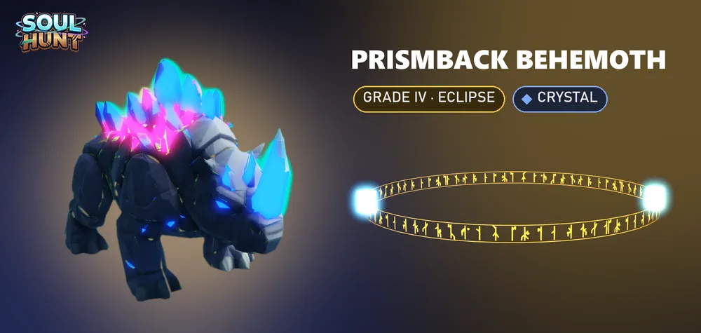
Prismback Behemoth · Grade IV · 💎 Crystal
✨ Trait: Max Health +6%
➕ Perk: Damage taken −9%
💪 Vitality
✅ Obelisk Maul
Crescent Moon Chakram
📍 Heart Cavern · Lv40–45
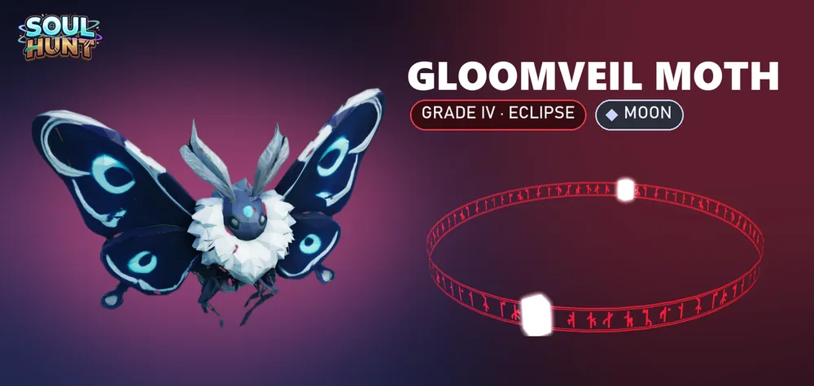
Gloomveil Moth · Grade IV · 🌙 Moon
✨ Trait: Energy regeneration +12%
➕ Perk: Skill cooldown −7.2%
💪 Soul
✅ Twilight Thorn Lotus
Crescent Moon Chakram
📍 Heart Cavern · Lv43–48
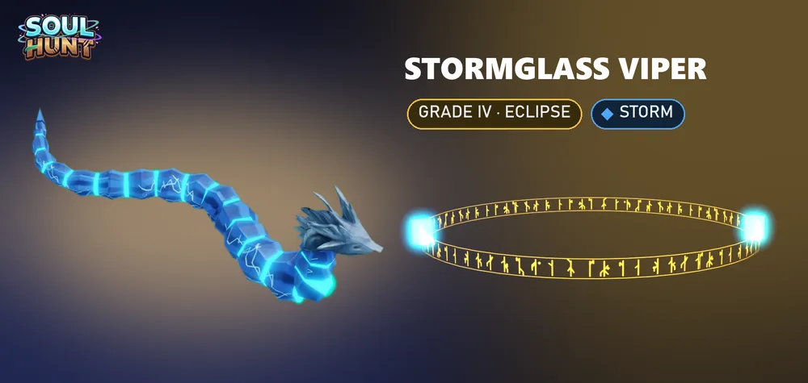
Stormglass Viper · Grade IV · ⚡ Storm
✨ Trait: Dash cooldown -15%
➕ Perk: Move speed +9%
💪 Artifice
✅ Thunderfang Kirin
📍 Heart Cavern · Lv46–50
⚔️ Souls & Skills
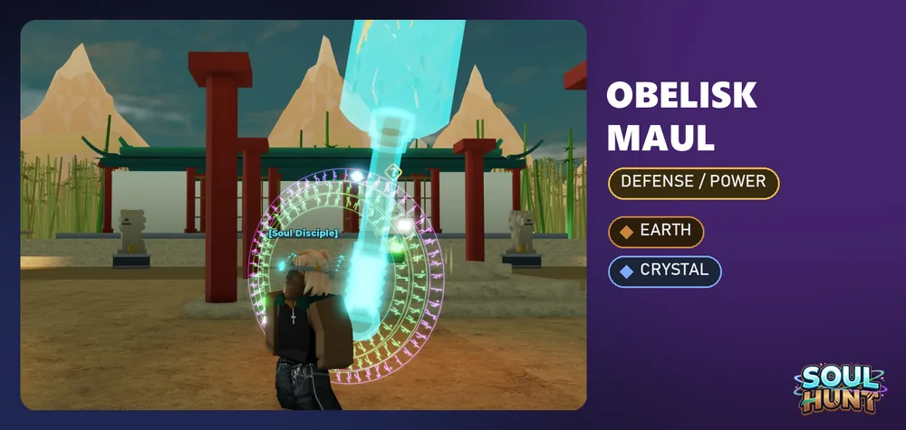
Rolled when you awaken
Change it at Attuner Shen for 300 Spirit Essence 🔮 (always a different one)
Obelisk Maul · Defense / Power
Z Quake Slam
X Chain Hook
C Monolith Wall
V Starfall Obelisk
Surge 🛡️ −20% damage + lava trail
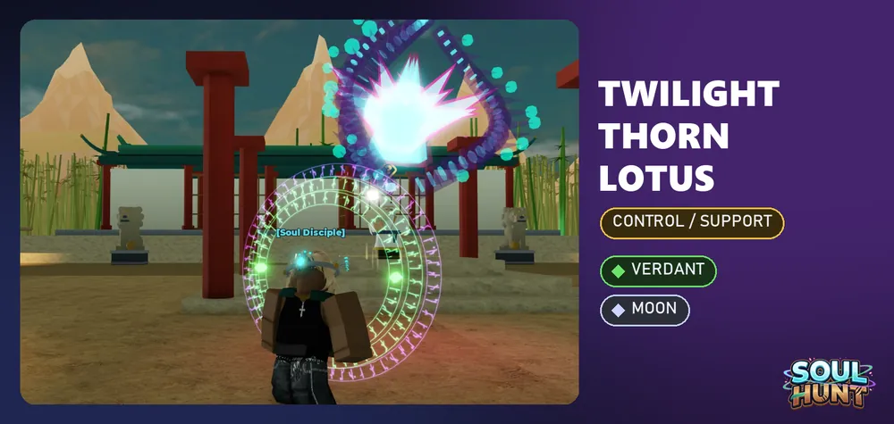
Twilight Thorn Lotus · Control / Support
Z Thorn Lash
X Bloom Field
C Lotus Engulf
V Twilight Garden
Surge 🩸 heal 8% of damage dealt
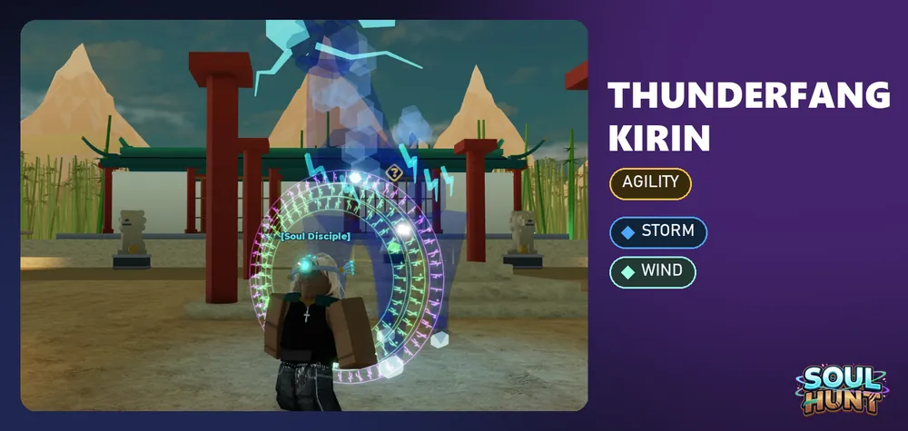
Thunderfang Kirin · Agility
Z Bolt Dash
X Chain Lightning
C Thunder Hoof
V Storm Stampede
Surge ⚡ ×1.4 speed
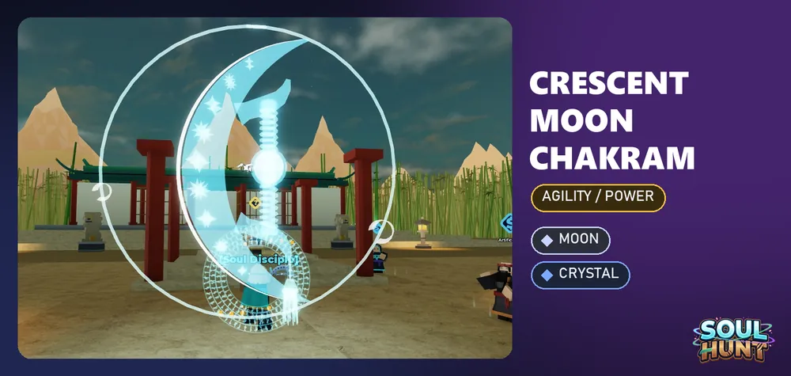
Crescent Moon Chakram · Agility / Power
Z Crescent Ricochet
X Lunar Orbit
C Moonstep
V Moonfall
Surge 🌙 M1 throws fly ×1.75 as far
🥋 Academy Fist (slot 1), skills open with Mastery:
Z Rising Palm (1)
X Spirit Jab (25)
C Shock Palm (50)
🗡️ Hidden weapons (slot 3) at Artificer Bo:
Frostpine Needles 2,000 Lumen
Thunderseed Bomb 4,500 Lumen
Mirror Blossom Fan 5,000 Lumen
Nightfall Sword Gamepass
🐗 Every Monster
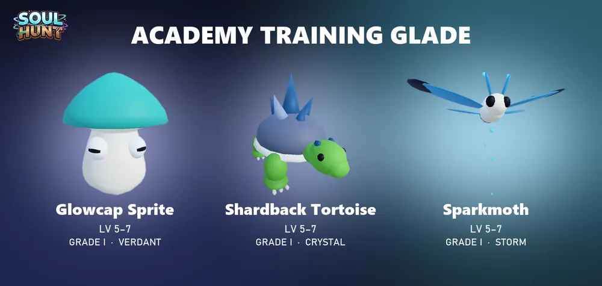
Every move shows a red warning → Q dash out 💨
◆ = Resonant (leaves a Remnant)
Its Grade is under its name, in the Ring's colour
👴 ◆ Elder = a rare old one of any beast, Grade II–III
2.4% of spawns
Far higher level
🎯 25 kills in one zone without a ◆ → the next one born near you is ◆
🌱 Academy training glade
No PvP
One beast a camp
👴 Elder ≤ II
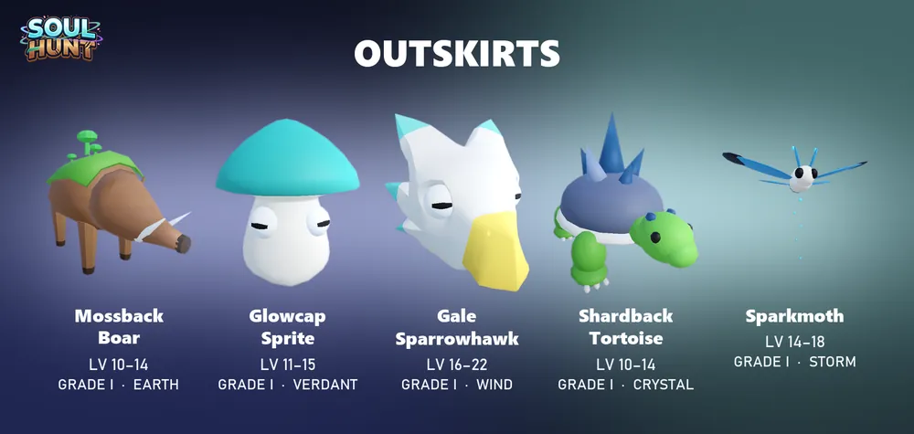
🌾 Outskirts · Grade I
Maz Bird 👑 at the lotus pond
Gale Peacock 👑
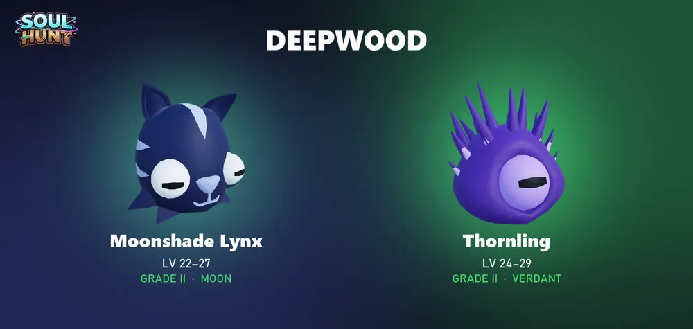
🌲 Deepwood · Grade II
Both attack on sight
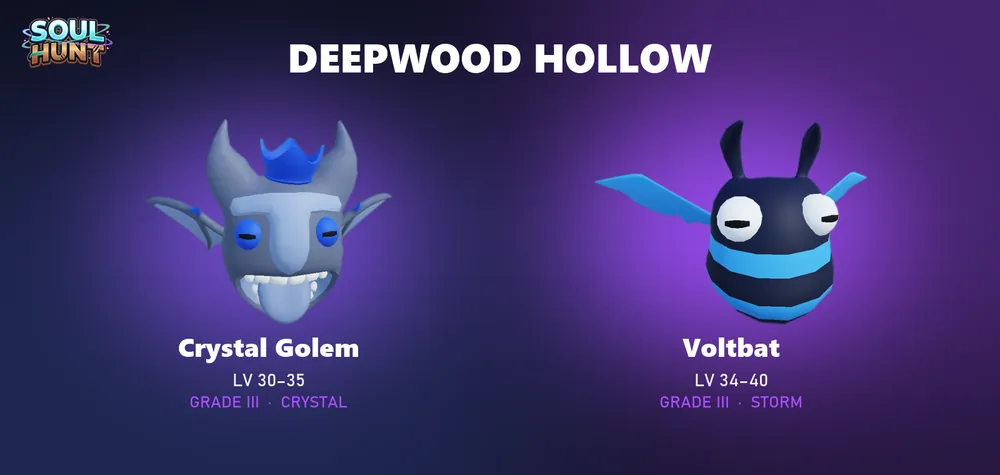
💎 Deepwood Hollow · Grade III
Panther Queen 👑
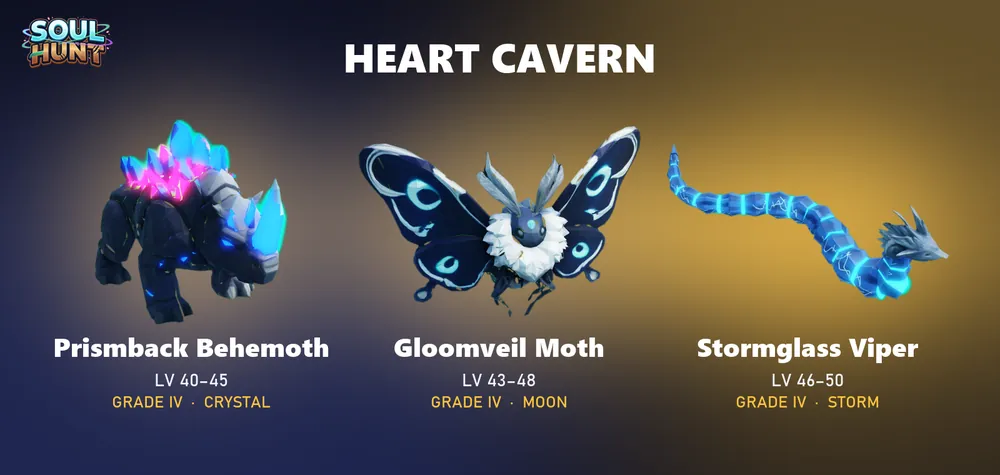
🌌 Heart Cavern · Grade IV
🌿 Immortal Herb on the rock mound in the middle
👑 Every Boss
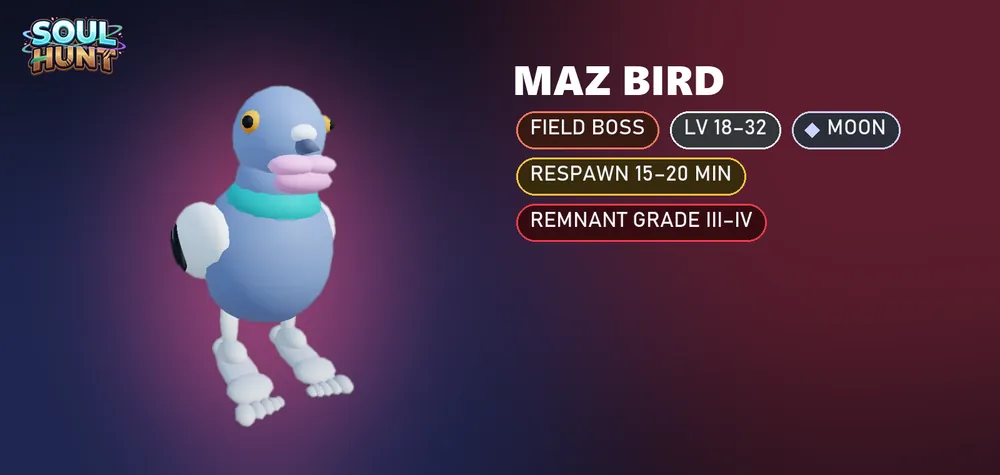
Top damage + their party get the full reward
Helpers get a share
⚠️ Every boss:
Spirit Pulse hits the whole arena for 8% HP (no dodging it)
Spirit Lance spears anyone who keeps away 8s, 12% HP (a wall stops it)
Heals count half
Maz Bird · Wing Slap · Peck Flurry · Go To Sleep · Coo Gust · Call the Flock · Pigeon Drop · Crumb Rain
🎁 15–22 Echo 💎 · 10–15 Essence 🔮 · Remnant Grade III–IV 💍 · Circlet of the Gale 4%
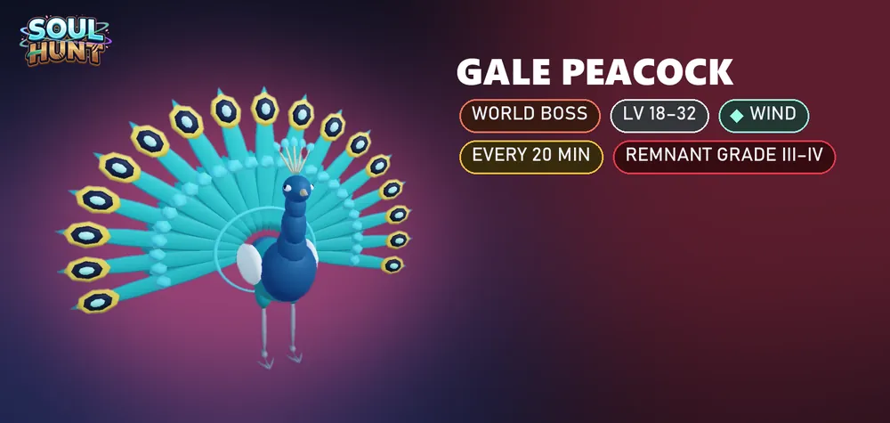
Gale Peacock · Peacock Beam · Tail Gust · Cyclone Field · Sky Dive · Feather Rain
🎁 20–30 Echo 💎 · 20–30 Essence 🔮 · Remnant Grade III–IV 💍 · Circlet of the Gale 10%
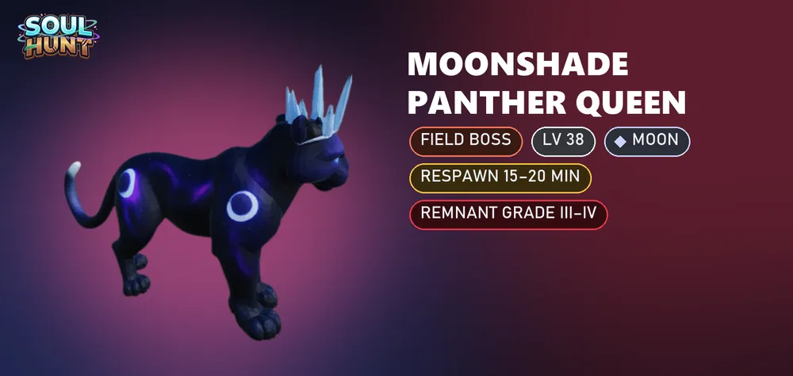
Moonshade Panther Queen · Shadow Tail Sweep · Moonclaw Combo · Shadow Pounce · Crescent Wave · Afterimage · Moon Crown Spikes
🎁 35–45 Echo 💎 · 30–40 Essence 🔮 · Remnant Grade III–IV 💍 · Mirror Jade 12%
💰 Drops & Relics
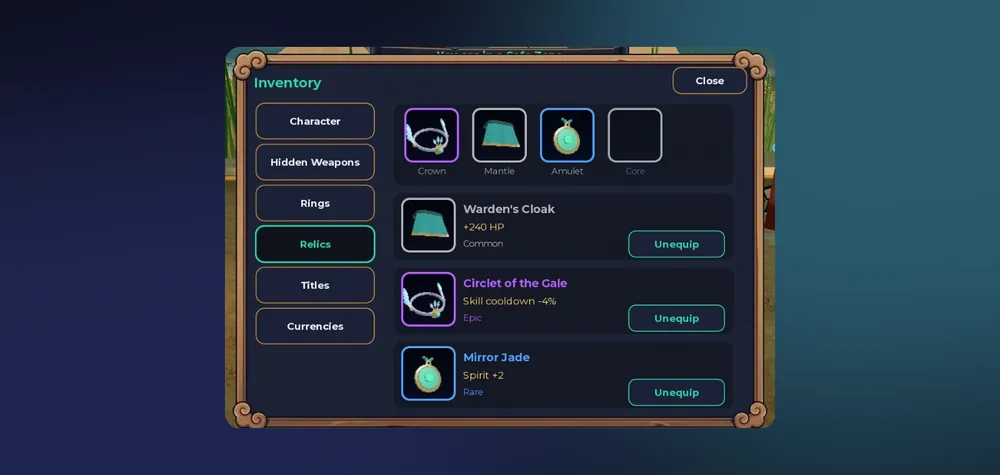
• Circlet of the Gale — Gale Peacock 10% · Maz Bird 4%
• Mirror Jade — Crystal Golem 3% · Moonshade Panther Queen 12%
• Warden's Cloak — graduating
🪙 Lumen everything
💎 Echo Resonant + bosses → Polish
🔮 Essence bosses only → Soul Reroll
🛠️ Builds
Your Soul tells you which elements to hunt → fill 4 slots with perfect Rings
Obelisk Maul — 🛡️ Tank: Vitality + Soul
Perks Damage taken −
✅ Shardback Tortoise I · Mossback Boar I · Crystal Golem III · Prismback Behemoth IV
Twilight Thorn Lotus — 🌸 Control: Soul + Spirit
Thornling for Thorn Lash
✅ Glowcap Sprite I · Moonshade Lynx II · Thornling II · Maz Bird III–IV · Panther Queen III–IV · Gloomveil Moth IV
Thunderfang Kirin — ⚡ Speed: Soul + Martial
Voltbat for Chain Lightning
✅ Sparkmoth I · Gale Sparrowhawk I · Gale Peacock III–IV · Voltbat III · Stormglass Viper IV
Crescent Moon Chakram — 🌙 Mid-range: Soul + Spirit
Moonshade Lynx for crits on every quick hit
✅ Shardback Tortoise I · Moonshade Lynx II · Maz Bird III–IV · Crystal Golem III · Panther Queen III–IV · Prismback Behemoth IV · Gloomveil Moth IV
🌱 เริ่มเล่น
ล่าสัตว์อสูรเรืองแสง ◆ แล้วดูดซับพลังมาเป็น วงแหวน 💍
1️⃣ เลือกฝ่าย → ปลุก วิญญาณ (อาวุธของเรา)
2️⃣ ตาม อาจารย์ใหญ่ ❓ → ป่าฝึก
3️⃣ ดูดซับวงแหวนวงแรก 💍 → ออกไป ชายป่าอสูร
🗺️ แตะ ประตูวาร์ป ทุกจุด — วาร์ปไปมาฟรี
🔓 วงแหวนปลดเลเวล: 0 วง → Lv10 · 1 → Lv20 · 2 → Lv30 · 3 → Lv40 · 4 → Lv50
🌿 ติด Lv49? กิน สมุนไพรเซียน → ทะลวงขั้น (ถ้ำหัวใจผลึก บนเนินหินกลางถ้ำ)
⚔️ ลานประลอง กลางชายป่าอสูร: ที่ไว้ดวลกัน
🛡️ ไม่มี PvP จนถึง Lv15 + มีวงแรก
⚔️ ตอนดูดซับ PvP เปิดเสมอ
📅 เข้าเกมแต่ละวัน → ลูเมน 🪙 หรือผลึกสะท้อน 💎
วันที่ 7 → โล่สั่นพ้อง ฟรี
🎮 ปุ่มควบคุม
🖱️ M1 โจมตี
Z X C V สกิล (V = ท่าไม้ตาย วงที่ 4)
Q พุ่ง 💨 (หลบเส้นเตือนแดง)
Ctrl ซ้าย เดิน ↔ วิ่ง 🏃 (พุ่งแล้ววิ่งต่อเอง)
Space ×2 กระโดดสองชั้น
1 2 3 หมัด / วิญญาณ / อาวุธลับ
G ปลดพลัง 🔥 (ตอนสู้)
H เผยวงแหวน 💍
📱 มือถือมีปุ่มบนจอทุกอย่าง พุ่งแล้ววิ่งต่อเอง
🎮 จอย: R2 ตี, B พุ่ง, L1 ปลดพลัง, L3 วิ่ง
📊 ค่าสถานะ
⚔️ ยุทธ์ หมัด
❤️ ร่างกาย พลังชีวิต
✨ วิญญาณ สกิลวิญญาณ
🔋 จิต พลังจิต การฟื้นพลังจิต ฮีล
🗡️ ศาสตร์ลับ อาวุธลับ
สูงสุด 50 ต่อค่าสถานะ → ตันได้ 3 ตัว
วงแหวน 💍 กับของวิเศษบวกเพิ่มได้อีก
🔄 รีเซ็ตแต้ม: ครั้งแรกฟรี
💍 วงแหวนทำงานยังไง
◆ สัตว์อสูรเรืองแสง (8%) และ บอสทุกตัว ทิ้ง เศษพลัง — ดูดซับ ⏳ I 15 วิ · II 30 วิ · III 45 วิ · IV 60 วิ
วงหนึ่งให้ แต้มค่าสถานะ + โบนัส (Perk) + ความสามารถ (Trait) + สกิล (Z → X → C → V)
🎯 ธาตุต้องเข้ากับวิญญาณ:
perfect = เต็ม
neutral = Trait ครึ่ง
clash = ไม่มี Trait ✖
ค้อนเสาศิลา 🪨💎
บัวหนามสนธยา 🌿🌙
กิเลนเขี้ยวอสนี ⚡🌪️
กงจักรจันทร์เสี้ยว 🌙💎
🔒 Grade: วงที่ 1–2 → ≤ II
วงที่ 3 → ≤ III
วงที่ 4 → ≤ IV
✨ ขัดเกลา (บรรณารักษ์เหวิน) สุ่มคุณภาพใหม่ 0.90–1.10
💥 ทำลายวงแหวน วงละ 1,000 ลูเมน → เก็บชุดใหม่
📜 วงแหวนทั้งหมด
Trait เต็มเมื่อธาตุเข้ากันพอดี
✖ เมื่อขัดกัน
ภูตเห็ดเรืองแสง (Glowcap Sprite) · Grade I · 🌿 พฤกษา
✨ ความสามารถ: การฮีลที่ได้รับ +4%
➕ โบนัส: คูลดาวน์สกิล −1.6%
💪 จิต
✅ บัวหนามสนธยา
📍 ป่าฝึกในสถาบัน Lv5–7 · ชายป่าอสูร Lv11–15
เต่าหลังผลึก (Shardback Tortoise) · Grade I · 💎 ผลึก
✨ ความสามารถ: พลังชีวิตสูงสุด +3%
➕ โบนัส: ดาเมจที่ได้รับ −2%
💪 ร่างกาย
✅ ค้อนเสาศิลา
กงจักรจันทร์เสี้ยว
📍 ป่าฝึกในสถาบัน Lv5–7 · ชายป่าอสูร Lv10–14
ผีเสื้อประกาย (Sparkmoth) · Grade I · ⚡ พายุ
✨ ความสามารถ: ดาเมจ M1 +3%
➕ โบนัส: โอกาสคริติคอล +2.4%
💪 ยุทธ์
✅ กิเลนเขี้ยวอสนี
📍 ป่าฝึกในสถาบัน Lv5–7 · ชายป่าอสูร Lv14–18
หมูป่าหลังตะไคร่ (Mossback Boar) · Grade I · 🪨 ดิน
✨ ความสามารถ: ดาเมจที่ได้รับขณะใช้สกิล -3%
➕ โบนัส: ดาเมจที่ได้รับ −2%
💪 ร่างกาย
✅ ค้อนเสาศิลา
📍 ชายป่าอสูร · Lv10–14
เหยี่ยววายุ (Gale Sparrowhawk) · Grade I · 🌪️ ลม
✨ ความสามารถ: คูลดาวน์พุ่ง -10%
➕ โบนัส: ความเร็ววิ่ง +2%
💪 ศาสตร์ลับ
✅ กิเลนเขี้ยวอสนี
📍 ชายป่าอสูร · Lv16–22
แมวป่าเงาจันทร์ (Moonshade Lynx) · Grade II · 🌙 จันทรา
✨ ความสามารถ: ตะครุบ: ฮิตแรกภายใน 1 วิหลังพุ่ง โอกาสคริ +10%
➕ โบนัส: โอกาสคริติคอล +4.8%
💪 ยุทธ์
✅ บัวหนามสนธยา
กงจักรจันทร์เสี้ยว
📍 ป่าลึก · Lv22–27
ภูตหนาม (Thornling) · Grade II · 🌿 พฤกษา
✨ ความสามารถ: แส้หนามตรึงนานขึ้น +0.2 วิ
➕ โบนัส: คูลดาวน์สกิล −3.2%
💪 วิญญาณ
✅ บัวหนามสนธยา
📍 ป่าลึก · Lv24–29
นกมาซ (Maz Bird) · Grade III–IV · 🌙 จันทรา · 👑
✨ ความสามารถ: ฟื้นพลังจิต +10%
➕ โบนัส: คูลดาวน์สกิล −7.2%
💪 วิญญาณ
✅ บัวหนามสนธยา
กงจักรจันทร์เสี้ยว
📍 บึงบัว ชายป่าอสูร
นกยูงวายุ (Gale Peacock) · Grade III–IV · 🌪️ ลม · 👑
✨ ความสามารถ: ปลดพลังนานขึ้น +1 วิ
➕ โบนัส: ความเร็ววิ่ง +9%
💪 วิญญาณ
✅ กิเลนเขี้ยวอสนี
📍 ชายป่าอสูร ติดขอบป่าลึก
โกเลมผลึก (Crystal Golem) · Grade III · 💎 ผลึก
✨ ความสามารถ: ดาเมจจากการถูกกระแทก -20%
➕ โบนัส: ดาเมจที่ได้รับ −6%
💪 ร่างกาย
✅ ค้อนเสาศิลา
กงจักรจันทร์เสี้ยว
📍 โพรงป่าลึก · Lv30–35
ค้างคาวสายฟ้า (Voltbat) · Grade III · ⚡ พายุ
✨ ความสามารถ: สายฟ้าลูกโซ่เด้งเพิ่ม 1 ครั้ง
➕ โบนัส: ความเร็ววิ่ง +6%
💪 ศาสตร์ลับ
✅ กิเลนเขี้ยวอสนี
📍 โพรงป่าลึก · Lv34–40
ราชินีเสือดำเงาจันทร์ (Moonshade Panther Queen) · Grade III–IV · 🌙 จันทรา · 👑
✨ ความสามารถ: ฆ่าแล้วความเร็ววิ่ง +8% นาน 3 วิ
➕ โบนัส: ความเร็ววิ่ง +9%
💪 ยุทธ์
✅ บัวหนามสนธยา
กงจักรจันทร์เสี้ยว
📍 โพรงป่าลึก
แรดผลึกปริซึม (Prismback Behemoth) · Grade IV · 💎 ผลึก
✨ ความสามารถ: พลังชีวิตสูงสุด +6%
➕ โบนัส: ดาเมจที่ได้รับ −9%
💪 ร่างกาย
✅ ค้อนเสาศิลา
กงจักรจันทร์เสี้ยว
📍 ถ้ำหัวใจผลึก · Lv40–45
ผีเสื้อม่านราตรี (Gloomveil Moth) · Grade IV · 🌙 จันทรา
✨ ความสามารถ: ฟื้นพลังจิต +12%
➕ โบนัส: คูลดาวน์สกิล −7.2%
💪 วิญญาณ
✅ บัวหนามสนธยา
กงจักรจันทร์เสี้ยว
📍 ถ้ำหัวใจผลึก · Lv43–48
อสรพิษแก้วอัสนี (Stormglass Viper) · Grade IV · ⚡ พายุ
✨ ความสามารถ: คูลดาวน์พุ่ง -15%
➕ โบนัส: ความเร็ววิ่ง +9%
💪 ศาสตร์ลับ
✅ กิเลนเขี้ยวอสนี
📍 ถ้ำหัวใจผลึก · Lv46–50
⚔️ วิญญาณและสกิล
สุ่มตอนปลุก
เปลี่ยนได้ที่ ผู้ปรับวิญญาณเฉิน 300 แก่นจิต 🔮 (ได้วิญญาณอื่นเสมอ)
ค้อนเสาศิลา (Obelisk Maul) · ป้องกัน / พลัง
Z ทุบสะเทือนปฐพี
X ตะขอโซ่
C กำแพงศิลา
V เสาดาราร่วง
ปลดพลัง 🛡️ ดาเมจที่ได้รับ −20% + รอยลาวา
บัวหนามสนธยา (Twilight Thorn Lotus) · ควบคุม / สนับสนุน
Z แส้หนาม
X ทุ่งบุปผา
C บัวกลืนกิน
V สวนสนธยา
ปลดพลัง 🩸 ดูดเลือด 8% ของดาเมจ (ไฟต์บอสได้ครึ่ง)
กิเลนเขี้ยวอสนี (Thunderfang Kirin) · ว่องไว
Z พุ่งสายฟ้า
X สายฟ้าลูกโซ่
C กีบอสนี
V กิเลนพายุคลั่ง
ปลดพลัง ⚡ วิ่งเร็ว ×1.4
กงจักรจันทร์เสี้ยว (Crescent Moon Chakram) · ว่องไว / พลัง
Z จันทร์เสี้ยวกระดอน
X วงโคจรจันทรา
C ก้าวจันทรา
V จันทราถล่ม
ปลดพลัง 🌙 M1 ปาไกลขึ้น ×1.75
🥋 หมัดสถาบัน (ช่อง 1) ปลดสกิลด้วยความชำนาญ:
Z ฝ่ามือทะยาน (1)
X หมัดจิต (25)
C ฝ่ามือสะท้าน (50)
🗡️ อาวุธลับ (ช่อง 3) ที่ช่างกลโป๋:
เข็มสนน้ำแข็ง 2,000 ลูเมน
ระเบิดเมล็ดอสนี 4,500 ลูเมน
พัดบุปผากระจก 5,000 ลูเมน
กระบี่รัตติกาล Gamepass
🐗 มอนทั้งหมด
ทุกท่าของมอนมีเส้นเตือนแดง → Q พุ่ง หลบ 💨
◆ = เรืองแสง (ทิ้งเศษพลัง) · Grade อยู่ใต้ชื่อ สีเดียวกับวงแหวน
👴 ◆ Elder (ตัวแก่) = มอนทุกชนิดแบบหายาก Grade II–III
2.4% ของที่เกิด
เลเวลสูงกว่าปกติมาก
🎯 ฆ่า 25 ตัวในโซนเดียวไม่เจอ ◆ → ตัวถัดไปที่เกิดใกล้เราเป็น ◆ แน่นอน
🌱 ป่าฝึกในสถาบัน
ไม่มี PvP
แคมป์ละชนิด
👴 ตัวแก่ ≤ II
🌾 ชายป่าอสูร · Grade I
นกมาซ 👑 ที่บึงบัว
นกยูงวายุ 👑
🌲 ป่าลึก · Grade II
เห็นแล้วเข้าตีทันที
💎 โพรงป่าลึก · Grade III
ราชินีเสือดำเงาจันทร์ 👑
🌌 ถ้ำหัวใจผลึก · Grade IV
🌿 สมุนไพรเซียนบนเนินหินกลางถ้ำ
👑 บอสทั้งหมด
คนทำดาเมจสูงสุด + ปาร์ตี้ได้รางวัลเต็ม
คนช่วยตีได้ส่วนแบ่ง
⚠️ บอสทุกตัว:
คลื่นจิต โดนทั้งลาน 8% HP (พุ่งหลบไม่ได้)
หอกจิต ใส่คนยืนห่างนาน 8 วิ 12% HP (หลบหลังกำแพงได้)
ฮีลได้ครึ่งเดียว
นกมาซ (Maz Bird) · ตบปีก · จิกรัว · หลับซะ · ลมกุกกู · เรียกฝูง · นกดิ่งพสุธา · ฝนเศษขนมปัง
🎁 15–22 ผลึกสะท้อน 💎 · 10–15 แก่นจิต 🔮 · เศษพลัง Grade III–IV 💍 · รัดเกล้าวายุ 4%
นกยูงวายุ (Gale Peacock) · ลำแสงนกยูง · ลมหางพายุ · ทุ่งพายุหมุน · โฉบฟ้า · ฝนขนนก
🎁 20–30 ผลึกสะท้อน 💎 · 20–30 แก่นจิต 🔮 · เศษพลัง Grade III–IV 💍 · รัดเกล้าวายุ 10%
ราชินีเสือดำเงาจันทร์ (Moonshade Panther Queen) · กวาดหางเงา · คอมโบกรงเล็บจันทรา · ตะครุบเงา · คลื่นจันทร์เสี้ยว · เงาแยกร่าง · หนามมงกุฎจันทรา
🎁 35–45 ผลึกสะท้อน 💎 · 30–40 แก่นจิต 🔮 · เศษพลัง Grade III–IV 💍 · หยกกระจก 12%
💰 ของดรอปและของวิเศษ
• รัดเกล้าวายุ (Circlet of the Gale) — นกยูงวายุ 10% · นกมาซ 4%
• หยกกระจก (Mirror Jade) — โกเลมผลึก 3% · ราชินีเสือดำเงาจันทร์ 12%
• เสื้อคลุมผู้พิทักษ์ (Warden's Cloak) — จบการศึกษา
🪙 ลูเมน ได้จากทุกอย่าง
💎 ผลึกสะท้อน มอนเรืองแสง + บอส → ขัดเกลา
🔮 แก่นจิต บอสเท่านั้น → สุ่มวิญญาณใหม่
🛠️ แนวบิลด์
วิญญาณบอกว่าต้องล่าธาตุไหน → เก็บวง perfect ให้ครบ 4 ช่อง
ค้อนเสาศิลา — 🛡️ แทงก์: ร่างกาย + วิญญาณ
โบนัสลดดาเมจ
✅ เต่าหลังผลึก I · หมูป่าหลังตะไคร่ I · โกเลมผลึก III · แรดผลึกปริซึม IV
บัวหนามสนธยา — 🌸 คุม: วิญญาณ + จิต
ภูตหนามให้แส้หนาม
✅ ภูตเห็ดเรืองแสง I · แมวป่าเงาจันทร์ II · ภูตหนาม II · นกมาซ III–IV · ราชินีเสือดำเงาจันทร์ III–IV · ผีเสื้อม่านราตรี IV
กิเลนเขี้ยวอสนี — ⚡ สายเร็ว: วิญญาณ + ยุทธ์
ค้างคาวสายฟ้าให้สายฟ้าลูกโซ่
✅ ผีเสื้อประกาย I · เหยี่ยววายุ I · นกยูงวายุ III–IV · ค้างคาวสายฟ้า III · อสรพิษแก้วอัสนี IV
กงจักรจันทร์เสี้ยว — 🌙 ระยะกลาง: วิญญาณ + จิต
แมวป่าเงาจันทร์ให้คริทุกครั้งที่ตีถี่
✅ เต่าหลังผลึก I · แมวป่าเงาจันทร์ II · นกมาซ III–IV · โกเลมผลึก III · ราชินีเสือดำเงาจันทร์ III–IV · แรดผลึกปริซึม IV · ผีเสื้อม่านราตรี IV